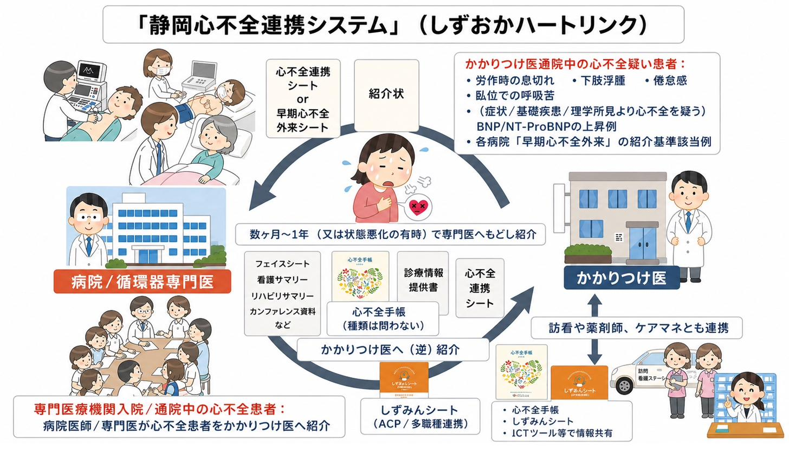
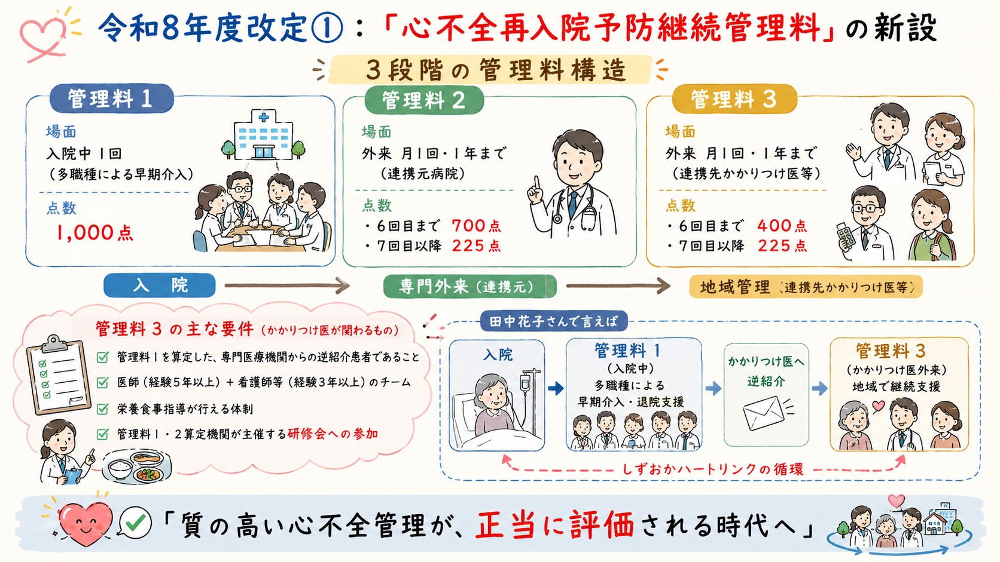

早期介入からACP・看取りまで——ICTと多職種で紡ぐシームレスなケア
心不全パンデミックを地域で支えるための連携基盤。
かかりつけ医・専門医・訪問看護・薬剤師・ケアマネージャーが、3つのツール（連携シートA・B＋心不全手帳）でつながります。
症候性心不全（Stage C）の再入院予防を中心としつつ、入り口の「早期発見」と出口の「生活・人生の質の維持」を包括し、ICT・多職種連携で患者を支える、静岡市の新しい心不全地域連携です。
本システムは、心不全臨床ステージC（症候性心不全）を中心とした病院・かかりつけ医間の連携のみならず、「早期発見（入り口）」と「生活・人生の質の維持（出口）」を包括し、ICTを含む多職種連携で切れ目のないケアを目指します。
従来のイーツーネット医療連携が病院・かかりつけ医の「医2」（医師2人）による連携だったのに対し、心不全連携では訪問看護・薬剤師・ケアマネジャー・栄養士・療法士など多職種の参画が不可欠です。複数の職種がつながる（＝ link）ことから「しずおかハートリンク（S-HF link）」と命名しました。
BNP/NT-proBNP上昇や軽微な症状の段階で気づき、専門医による精査・診断につなげる。Stage A/Bでの介入が予後を左右します。
連携シートA・Bと心不全手帳で情報共有。Fantastic Four・SGLT2・MRAを継続し、増悪兆候の早期発見と迅速な戻し紹介を実現。
S-HFnet・シズみんシート（ACP）・シズケア＊かけはし（ICT）を活用し、患者の価値観を尊重した療養生活を地域で支える。
かかりつけ医通院中の「心不全疑い」症例から、専門医での精査、もどし紹介、安定期管理、多職種連携までの全体像。

かかりつけ医から専門医へ、そして専門医から再びかかりつけ医へ——双方向の連携を、3つのツール（連携シートA・B＋心不全手帳）でシンプルに完結させます。
しずおかハートリンクが実際にどう回るのか、典型例でお示します。
外来で評価：体重 2週間で+4kg（52→56kg）、胸部XPで心拡大あり、BNP 180 pg/mL。BNP≧100で「心不全」域。連携シートAにチェック（息切れ増悪 / BNP≧100 / 1週間で2kg以上の体重増加）と自由記載「2週間で4kg増加、BNP 180、精査・治療を依頼」を添え、専門医外来へ紹介。
診断：HFpEF（EF 55%）。SGLT2阻害薬継続、MRA 新規追加、アゾセミド 15mg/日 新規追加。心臓リハ実施。退院カンファでケアマネ・訪問看護・薬剤師・栄養士・MSW・PTが情報共有。連携シートB主要記入：EF分類HFpEF / BNP安定時110 / 体重54.0kg / MRAに伴うK・腎機能の適切な間隔での確認要 / もどし紹介目安：BNPが前回比+40%以上 or 体重+2kg以上。心不全再入院予防継続管理料1（1,000点）算定。
毎回外来で心不全手帳を確認（体重・血圧・脈拍・自覚症状）。MRA内服中→K・腎機能を月1回確認。SGLT2阻害薬・ループ利尿薬のシックデイ・ルールを患者へ説明。訪問看護師から「足のむくみ・息切れの観察→FAX/ICTでかかりつけ医へ報告」、薬剤師から服薬カレンダー使用・居宅療養管理指導報告、ケアマネからデイの活動状況報告。心不全再入院予防継続管理料3を月1回算定。
退院3ヶ月後、訪問看護師から「体重+2kg以上、息切れは訴えないが脈が早い」との報告。再受診で体重 56.5kg（+2.5kg）、BNP 192（+75%）、脈拍112回/分、心電図で心房細動の出現。連携シートBの「もどし紹介の目安」に該当。連携シートA再使用、自由記載「BNP 192（+75%）、心房細動により心不全増悪+体重増加あり。抗凝固薬を開始しました。早期の再診をお願いします」を添えてもどし紹介。
日常診療で迷わず心不全の診断・管理・連携が行えるよう、日本心不全学会2023年改訂ステートメントおよび2025年改訂版心不全診療ガイドラインに基づいた要点を一枚に集約しました。
| 判定 | 臨床的解釈と推奨アクション |
|---|---|
| 除外 | 心不全の可能性は極めて低い。呼吸器疾患・貧血・腎疾患・薬剤性浮腫などを鑑別。経過観察または他科紹介を検討。 |
| 経過観察 | 心不全の可能性は低いが、可能なら経過観察。リスク因子（高血圧・糖尿病・心房細動）の評価と管理。症状や所見の悪化があれば再検。 |
| 前心不全 〜心不全 |
前心不全（Stage A/B）または早期心不全の可能性。胸部X線・心電図を確認。早期心不全外来 または 心エコー可能な専門医へ紹介を検討。リスク因子の管理を強化。 |
| 心不全 | 心不全の可能性が高い（Stage C）。連携シートAで専門医へ紹介。心エコーを含む心機能評価を早期に実施。原因検索。 |
| 高リスク 心不全 |
高リスク心不全（Stage C/D）の可能性が高い。速やかに専門医へ紹介し、原因検索・診療ガイドラインに準じた標準治療を開始。安静時呼吸困難など強い症状を伴う場合は救急対応も考慮。 |
参考：日本心不全学会 血中BNP/NT-proBNPを用いた心不全診療に関するステートメント 2023年改訂版、日本循環器学会・日本心不全学会 2025年改訂版心不全診療ガイドライン
日常診療のデスクに置いて、迷ったときの即時参照用に。
目標：うっ血のない状態（ドライウェイト：連携シートBに記載）の維持。
基本：心不全手帳の毎日の体重変化を見る。
→ ループ利尿薬一時増量（例：フロセミド 10〜20mg追加）。経口で吸収が悪い場合は静注ボーラス（フロセミド 5〜20mg i.v.）も検討。1週間以内にNa・K・BUN・Crを確認。
→ 連携シートAで専門医へ紹介。トルバプタン導入（入院要）等を検討。
→ 0.3mg/dL程度の一時的上昇なら、うっ血が残る限り中止しない。脱水所見なく体液過剰が持続なら継続可能（一過性のCre上昇は長期予後に影響しない：DOSE trial, N Engl J Med 2011; 364:797-805）。
連携で使用する2枚のシートを、ExcelダウンロードとHTMLオンライン入力フォームの両方で提供します。HTMLフォームに入力 → 印刷 or PDF保存して紹介状に添付できます。
令和8年度改定では、心不全治療による再入院予防を推進する観点から、「心不全再入院予防継続管理料」（管理料1・2・3）が新設され、かかりつけ医による包括的継続管理が正当に評価されます。

心不全の「出口」を一人で背負わない。S-HFnet（顔の見える多職種ネットワーク）× シズみんシート（ACP）× シズケア＊かけはし（ICT）で、地域がチームになる。
静岡心不全多職種連携の会。職種・経験不問、スタッフ参加歓迎の「顔の見える多職種ネットワーク」。地域で学び合い、みんなで支える心不全ケアを実践します。
S-HFnet 公式サイト 公式Instagram心不全手帳で「身体（バイタル）」を守り、シズみんシートで「心（意思）」を守る。本人の希望・家族の思い・最期をどこで過ごしたいか——多職種で集め、可視化するACPツール。
シズみんシート 詳細電話・FAXに代わる、迅速かつセキュアなタイムライン形式の情報共有。体重・血圧・症状・写真・動画の共有で、すれ違いをなくし、地域チームが一斉に動ける環境を実現。
シズケア＊かけはし 詳細「チーム医療のパスポート」。患者が日々の体重・血圧を記録し、訪問看護師・薬剤師・ケアマネ・かかりつけ医が「医療スタッフ連携ノート」で気づきを共有する連絡帳機能を備えます。
心不全手帳 PDF（学会公開）かかりつけ医と専門医、そして多職種がつながれば、診療負担は減り、患者さんの予後も良くなります。
心不全患者さんに手帳を渡し、「毎朝、体重・血圧・脈拍を記録する」ように指導してください。
絶対値より、前回からの上昇率が重要。BNP+40%以上、NT-proBNP+30%以上は増悪サインです。
体重+2kg・BNP上昇があれば、連携シートAで専門医へつないでください。「悩む時間より、つなぐ行動」が患者を守ります。
専門医が処方した予後改善薬（Fantastic Four・SGLT2・MRA）は、かかりつけ医の判断で中止せず、まずご相談ください。
訪問看護・ケアマネ・薬剤師・栄養士・療法士と一緒に、チームで心不全患者を診る体制を作ってください。心不全手帳・ICT・シズみんシートが助けます。
連携シート（A・B）、診療管理ガイド、クイックチェックリストなど、しずおかハートリンクの実装に必要なすべての資材を一括でご利用いただけます。
早期心不全外来 実施医療機関（静岡市内）
心不全手帳・ACP・ICT
📓 心不全手帳（PDF全ページ／心不全学会）↗ 🤝 シズケア＊ささえあい連携シート（ACP）↗ 💻 シズケア＊かけはし（ICT連携）↗静岡心不全多職種連携の会
👥 しずおかハートネット（S-HFnet）